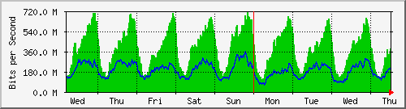
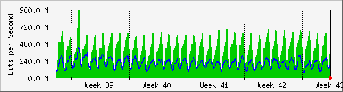
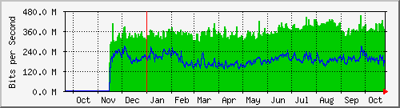

Traffic Analysis for Gi1/0/4 -- spider.sky
| System: | spider.sky in stoyka |
| Maintainer: | falcon@skyinet.org |
| Description: | GigabitEthernet1/0/4 pon |
| ifType: | ethernetCsmacd (6) |
| ifName: | Gi1/0/4 |
| Max Speed: | 1000.0 Mbits/s |
| Ip: | No Ip (No DNS name) |
The statistics were last updated Thursday, 26 October 2017 at 12:55,
at which time 'spider.sky' had been up for 8 days, 10:32:41.
`Daily' Graph (5 Minute Average)

|
Max |
Average |
Current |
| In |
711.8 Mb/s (71.2%) |
335.3 Mb/s (33.5%) |
381.0 Mb/s (38.1%) |
| Out |
316.1 Mb/s (31.6%) |
178.1 Mb/s (17.8%) |
222.9 Mb/s (22.3%) |
`Weekly' Graph (30 Minute Average)

|
Max |
Average |
Current |
| In |
710.6 Mb/s (71.1%) |
387.1 Mb/s (38.7%) |
386.9 Mb/s (38.7%) |
| Out |
356.5 Mb/s (35.6%) |
189.3 Mb/s (18.9%) |
199.9 Mb/s (20.0%) |
`Monthly' Graph (2 Hour Average)

|
Max |
Average |
Current |
| In |
954.6 Mb/s (95.5%) |
376.8 Mb/s (37.7%) |
326.8 Mb/s (32.7%) |
| Out |
421.0 Mb/s (42.1%) |
198.3 Mb/s (19.8%) |
182.4 Mb/s (18.2%) |
`Yearly' Graph (1 Day Average)

|
Max |
Average |
Current |
| In |
454.2 Mb/s (45.4%) |
351.2 Mb/s (35.1%) |
371.5 Mb/s (37.2%) |
| Out |
266.5 Mb/s (26.7%) |
187.3 Mb/s (18.7%) |
185.7 Mb/s (18.6%) |
| GREEN ### |
Incoming Traffic in Bits per Second |
| BLUE ### |
Outgoing Traffic in Bits per Second |